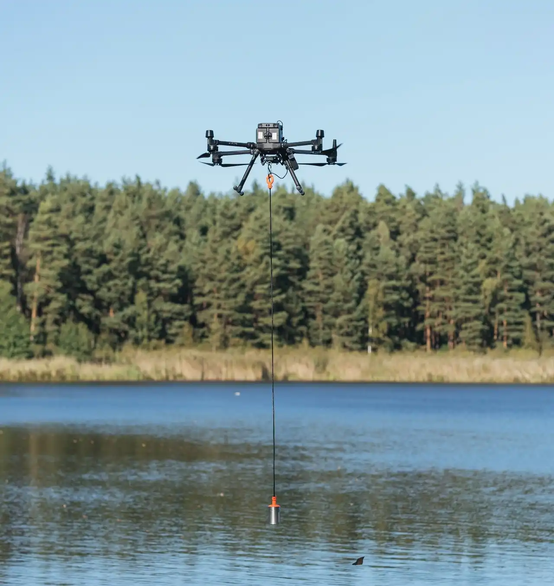
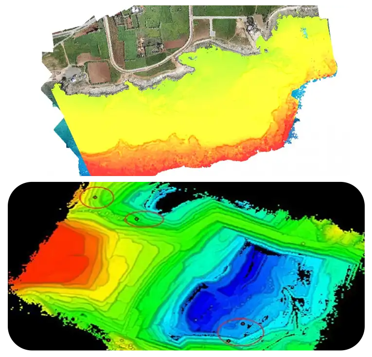
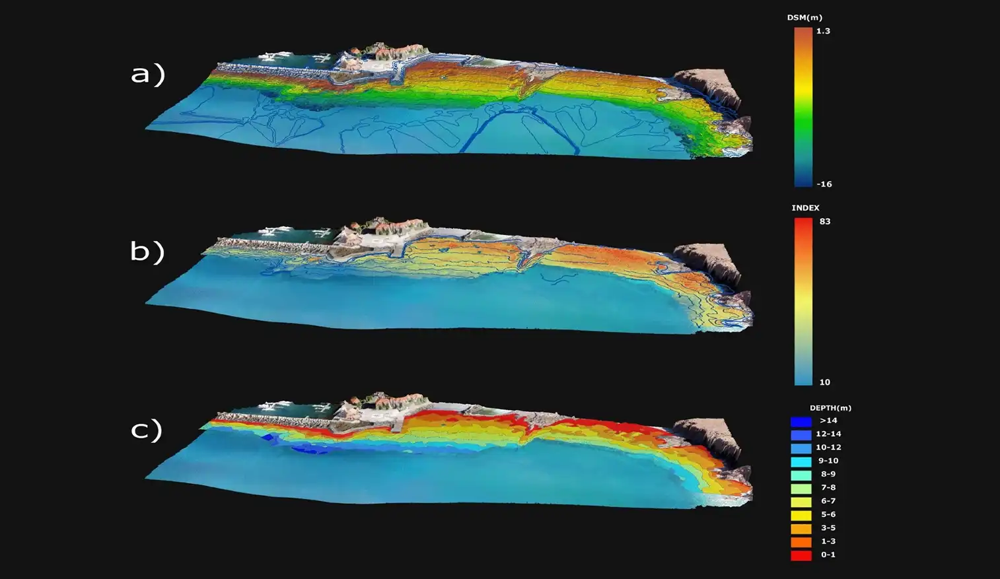
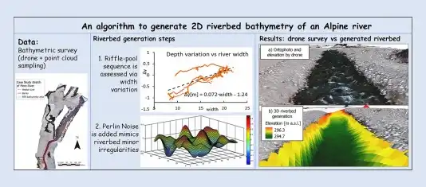
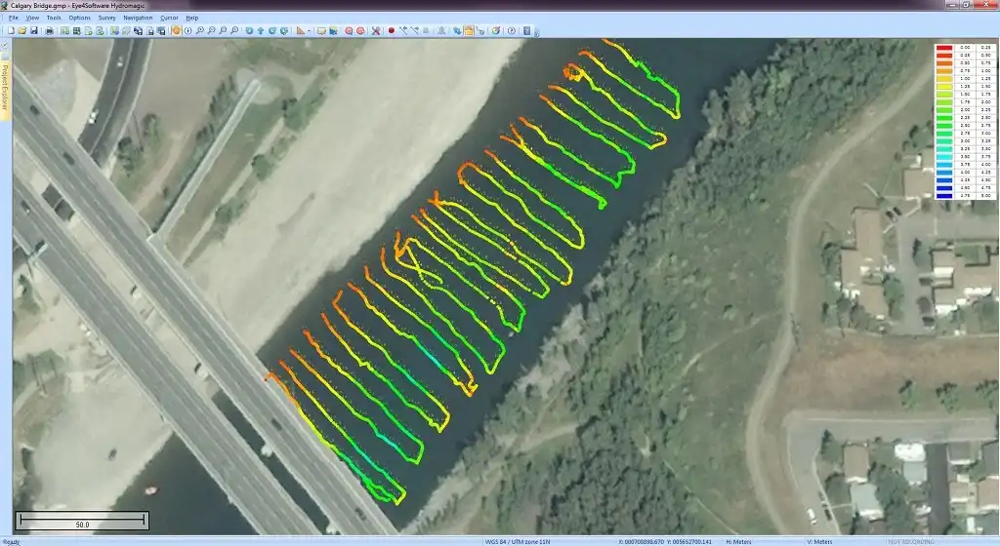
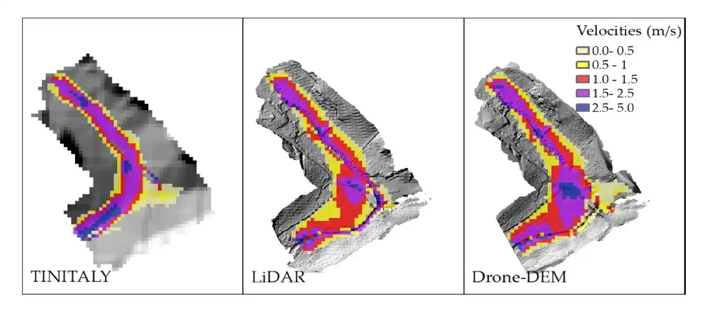
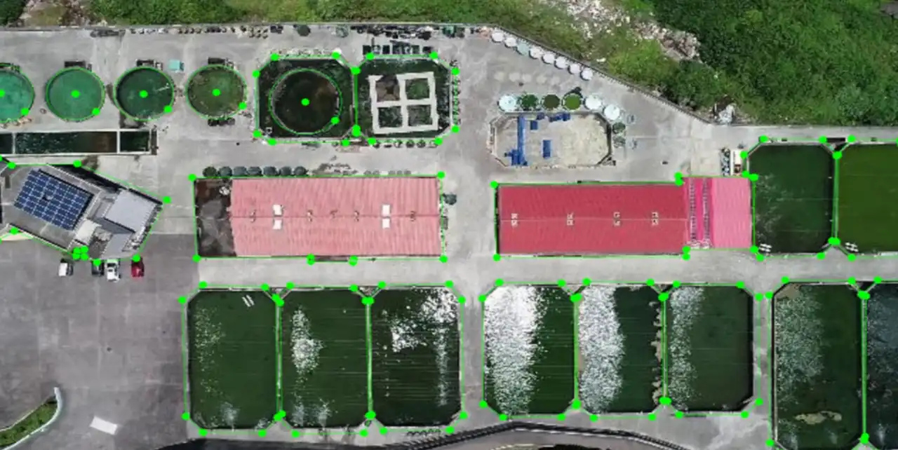
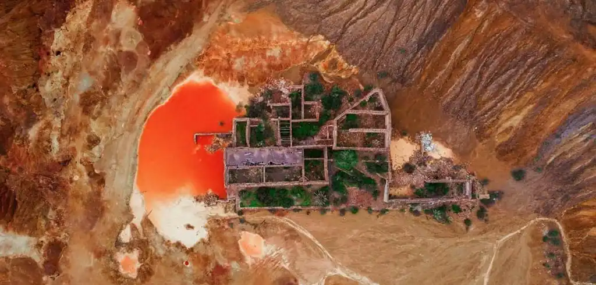

Bathymetry Survey
In short: we map the beds of rivers, lakes, reservoirs and coastal waters with drone-mounted sonar, each depth reading georeferenced by high-precision GPS, adding LiDAR and cameras where needed. Our GIS engineers and hydrographic specialists deliver depth contours, depth and volume data, point clouds, 3D surface models and reports for planning, design and monitoring. See water resources surveys.

High-Resolution Mapping
Data Collection
- Sonar Technology Drones equipped with sonar sensors emit sound waves that travel through the water and bounce back after hitting the seabed, lakebed, or riverbed. The time taken for the sound waves to return is used to calculate the depth of the water at various points.
- GPS Integration High-precision GPS systems onboard the drones ensure that each depth measurement is accurately georeferenced, allowing for the creation of detailed spatial maps.
- Depth Contours The collected depth data is processed to generate depth contours, which are lines connecting points of equal depth. These contours help in understanding the variations in underwater terrain.
- Feature Identification Detailed maps can highlight specific underwater features such as trenches, ridges, and submerged objects, providing valuable information for various applications.
- Environmental Studies High-resolution maps aid in the study of aquatic habitats, helping to monitor and protect ecosystems.
- Engineering ProjectsAccurate topographical data is crucial for planning and constructing underwater structures like bridges, pipelines, and docks.
- NavigationMariners use these maps to navigate safely, avoiding underwater hazards.
- Precision and Detail High-resolution mapping provides a high level of detail, which is essential for accurate analysis and decision-making.
- Efficiency Drones can cover large areas quickly, significantly reducing the time and cost compared to traditional survey methods.
3D Modeling
Data Collection and Integration
- Multi-Angle Scanning Drones perform multiple passes over the survey area, collecting data from different angles. This multi-angle approach ensures that all features are captured accurately.
- Integrated Sensors Alongside sonar, drones can be equipped with additional sensors like LiDAR (Light Detection and Ranging) and high-resolution cameras to enhance the detail and accuracy of the models.
Model Generation
- Point Cloud Creation The data collected is used to create a point cloud, a set of data points in a three-dimensional coordinate system representing the underwater terrain.
- Surface Reconstruction Advanced software processes the point cloud to generate a 3D surface model, which can be textured and colored to reflect the actual appearance of the seabed.
Applications
- Visualization 3D models provide an immersive view of the underwater environment, useful for presentations, education, and stakeholder engagement.
- Simulation and Analysis Engineers and scientists can use these models for simulations, such as predicting the impact of construction projects on the underwater landscape.
Advantages:
- Enhanced Understanding 3D models offer a more intuitive and comprehensive view of the underwater environment compared to traditional 2D maps.
- Versatility These models can be used in various software applications for further analysis, virtual reality experiences, and detailed planning.


Coastal and Shoreline Surveys
Tracking shoreline erosion shows how coastlines change over time. Monitoring erosion patterns and shoreline positions lets authorities plan coastal management and defence measures to protect vulnerable communities. Habitat mapping complements this by surveying sensitive habitats such as coral reefs, seagrass beds and mangrove forests.
This shows scientists which areas need protection or restoration. Together, erosion monitoring and habitat mapping give a fuller picture of coastal change and support conservation plans that balance human needs with the environment.
Environmental Monitoring and Assessment
Water quality monitoring records parameters such as temperature, pH and turbidity alongside depth measurements, describing the physical and chemical condition of a water body and helping locate pollution sources. Sediment transport studies explain how sediment moves in rivers, lakes and coastal areas.
Analysing sediment distribution and movement shows how waterways and coastlines are shaped. This informs measures to control erosion and siltation and reduce the effect of human activity on aquatic ecosystems. Combined with water quality data, it supports effective management of water resources.


Infrastructure Planning and Inspection
Before building bridges, piers or underwater pipelines, a pre-construction survey of the seabed, water depth and surroundings lets engineers fit the design to site conditions and reduce risk. Regular inspections are also needed for existing structures such as dams, levees and seawalls.
Inspections identify damage, deterioration and maintenance needs, so repairs can be made before failures occur. Together, site assessments and inspections help keep underwater infrastructure safe and serviceable.
Flood Risk Management
Floodplain mapping identifies areas vulnerable to flooding, taking account of topography, hydrology and storm patterns, and forms the basis of flood risk management plans. Assessing flood defences such as levees and barriers checks that they can still protect against floods.
Flood defence assessments identify strengths and weaknesses in these structures and recommend upgrades or repairs. Combined with floodplain mapping, they help communities manage flood risk and protect lives, property and infrastructure.


Aquaculture
Fish farm surveys assess water quality, seabed topography and other factors to find the best locations for fish cages, supporting growth while limiting environmental impact. Environmental impact studies show how aquaculture affects the marine ecosystem.
These studies monitor water quality, sedimentation and biodiversity, and assess the risk of disease and parasite transfer between farmed and wild fish. Regular studies let fish farms address problems early and operate sustainably.
Archaeological Surveys
Underwater archaeology requires precise location and mapping of sites such as shipwrecks and submerged settlements. Detailed maps and 3D models record these sites accurately, preserving historical and cultural information and helping researchers understand past events and human activity.
Accurate mapping also allows site condition to be monitored over time, supporting conservation of these cultural resources and the study of sites that were previously hard to reach.

Our Features

Fast Data Delivery
Our in-house GIS team processes drone survey data quickly, so deliverables reach clients on schedule.
Survey-Grade Accuracy
Every survey is tied to DGPS ground control points, so measurements and volumes can be relied on.

Team of Experts
Our GIS engineers, drone pilots and software engineers handle each project from flight to final deliverable.
Advanced Equipment
Drones and sensors are chosen to suit each survey: camera, LiDAR, thermal or multispectral.
Frequently asked questions
What is a bathymetry survey?
A bathymetry survey measures the depth and shape of the bed of a river, reservoir, lake or canal, usually with an echo sounder linked to GNSS positioning.
Why combine bathymetry with a drone survey?
The drone maps banks and dry areas, and bathymetry maps the bed under water. Together they give one continuous terrain model for design, capacity and siltation studies.
What can bathymetry data be used for?
Reservoir capacity and siltation studies, dredging volumes, river training and bridge design, intake and outfall design, and flood modelling.
What are the typical deliverables?
Depth points, a bed surface model, contours, cross-sections and capacity tables, in CAD and GIS formats.